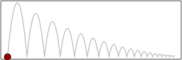

|
 |
deSolve - Differential Equations in R
'deSolve' is an add-on package for the open source data analysis
system R for the numerical
treatment of systems of differential equations
What is in deSolve?
deSolve contains functions that solve initial value problems of a
system of first-order ordinary differential equations (ODE), of
partial differential equations (PDE), of differential algebraic
equations (DAE), and of delay differential equations (DDE). The
functions provide an interface to the FORTRAN functions lsoda, lsodar,
lsode, lsodes of the ODEPACK collection, to the FORTRAN functions
dvode, zvode, daspk and radau5, and a C-implementation of solvers of
the Runge-Kutta family with fixed or variable time steps.
The package contains also routines designed for solving ODEs
resulting from 1-D, 2-D and 3-D partial differential equations (PDE)
that have been converted to ODEs by numerical differencing.
Project web pages

Documentation
Manual and Tutorials
Papers
Despite of their relatively similar titles, the papers below are
describing quite different aspects of the deSolve software and contain
different examples.
- Soetaert, K. and Petzoldt, T. (2011): Solving ODEs, DAEs, DDEs and
PDEs in R. Journal of Numerical Analysis, Industrial and Applied
Mathematics (JNAIAM) 6(1-2),
51-65. http://jnaiam.org/uploads/jnaiam_6_4.pdf
- Soetaert, K., Petzoldt, T. & Setzer, R. W. (2010): Solving
differential equations in R: package deSolve. Journal of Statistical
Software 33(9),
1-25. http://www.jstatsoft.org/v33/i09
- Soetaert, K. & Petzoldt, T. (2010): Inverse modelling,
sensitivity and Monte Carlo analysis in R using package FME. Journal
of Statistical Software 33(3),
1-28. http://www.jstatsoft.org/v33/i03
- Soetaert, K., Meysman, F. and Petzoldt, T. (2010) Solving
Differential Equations in R. AIP Conf. Proc. Volume 1281, pp. 31-34
ICNAAM 2010: International Conference of Numerical Analysis and
Applied Mathematics
2010; doi:10.1063/1.3498463
- Soetaert, K. Petzoldt, T. & Setzer, R. W. (2010): Solving
differential equations in R. The R Journal 2(2),
5-15. http://journal.r-project.org/
Books that make use of deSolve
The following books make extensive use of deSolve:
-
Soetaert, Karline, Cash, Jeff and Mazzia, Francesca (2012)
Solving Differential Equations in R. Springer, 248 pp.
[book
homepage]
-
Soetaert, Karline and Herman, Peter M.J. (2009) A Practical Guide to
Ecological Modelling Using R as a Simulation Platform. Springer, 372 pp.
[book
homepage]
-
Stevens, M. Henry H. (2009) A Primer of Ecology with
R. Springer. 388 pp. [book
homepage]
The lab manual of the following book uses the predecessor package
"odesolve". It works also with "deSolve":
Conference Talks
-
Petzoldt T., Dynamic simulation models - is R powerful enough?
UseR!2009, July 8-10, Rennes,
France [slides]
-
Soetaert K., Mathematical modelling of the environment - are
there enough data? UseR!2009, July 8-10, Rennes,
France [slides]
-
Soetaert, K., Meysman, F. and Petzoldt, T. (2010) Solving Differential
Equations in R. ICNAAM 2010: International Conference of Numerical
Analysis and Applied Mathematics, September 19-25, Rhodos, Greece.
2010; doi:10.1063/1.3498463
-
Petzoldt, T. and Soetaert, K. (2011) Using R for Systems Understanding -
A Dynamic Approach. UseR!2011, August 16-18, University of Warwick,
Coventry, UK [slides]
Developers
-
Karline
Soetaert, Royal Netherlands Institute for Sea Research (NIOZ)
-
Thomas
Petzoldt, Technische Universität Dresden
-
Woodrow Setzer, US Environmental Protection Agency (EPA)
Related Packages
-
rootSolve:
Nonlinear root finding, equilibrium and steady-state analysis of
ordinary differential equations.
-
bvpSolve:
Functions that solve boundary value problems (BVP) of systems of
ordinary differential equations.
-
ReacTran: Routines
for developing models that describe reaction and advective-diffusive
transport in one, two or three dimensions.
-
marelac:
Tools, constants and conversions for marine and lacustrine sciences.
-
simecol: An
object oriented framework for structured implementation of dynamic
models.
-
FME: Flexible
Modelling Environment: sensitivity analysis, parameter fitting and
MCMC.
Mailing list
Discussions about deSolve should be directed to the mailing list:
r-sig-dynamic-models@r-project.org
This Special
Interest Group for Dynamic Simulation Models in R is a
forum for discussing the use of R for implementation, simulation and
analysis of dynamic simulation models. The list covers differential
equation models as well as other dynamic systems in different
application areas: natural sciences, engineering, economy and many
others.
Date: 2013-04-07